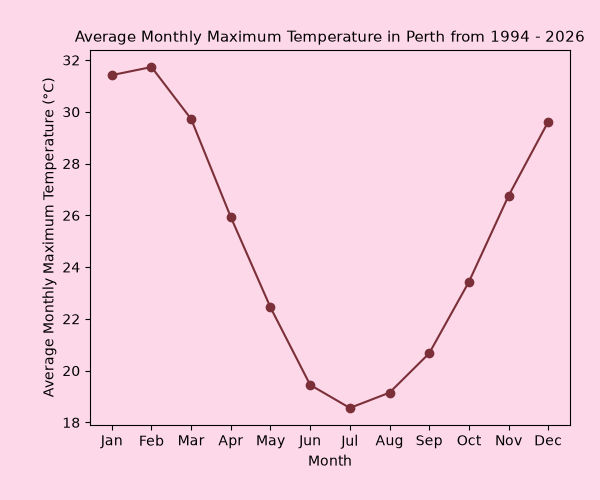
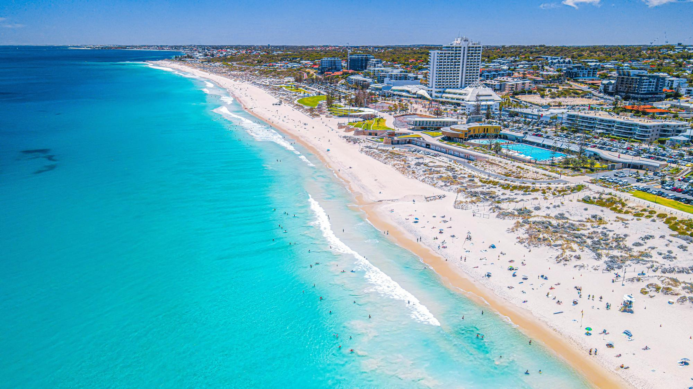
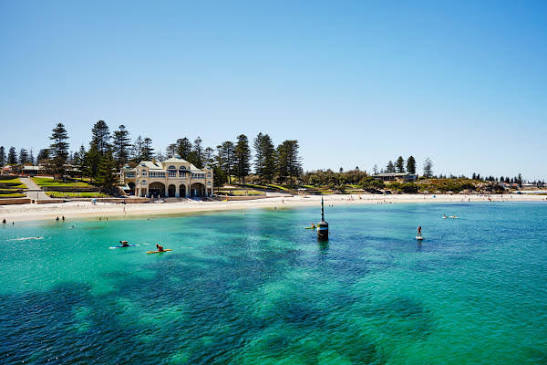
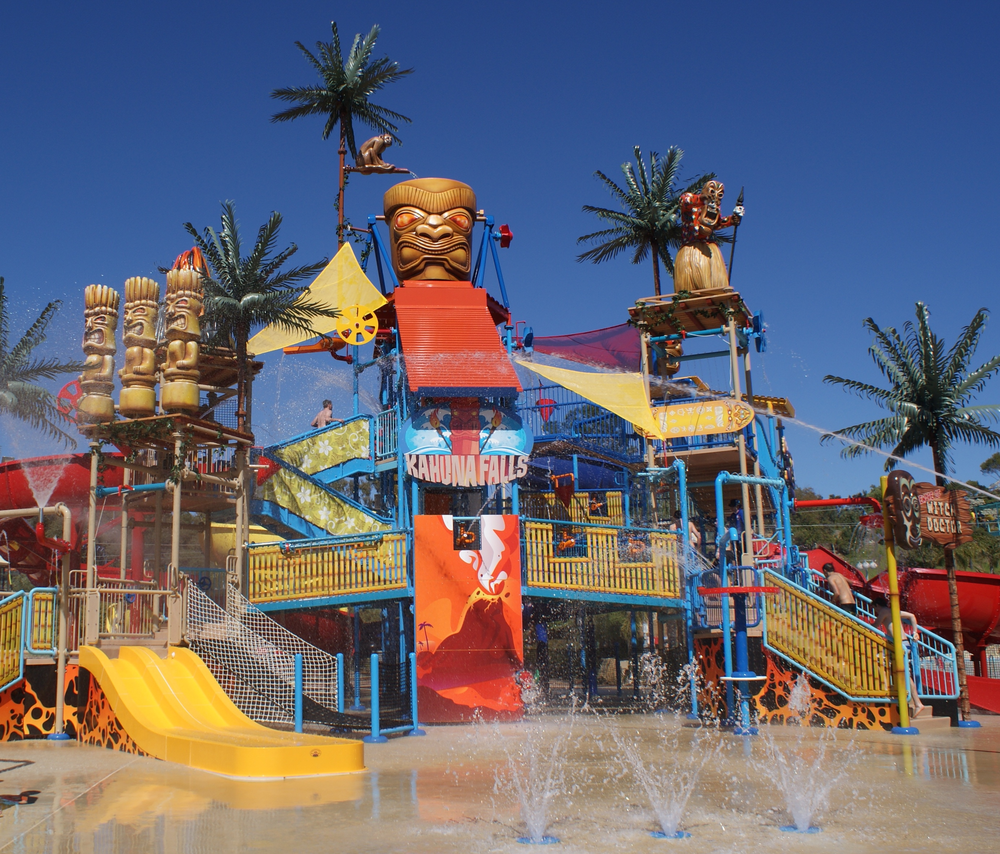
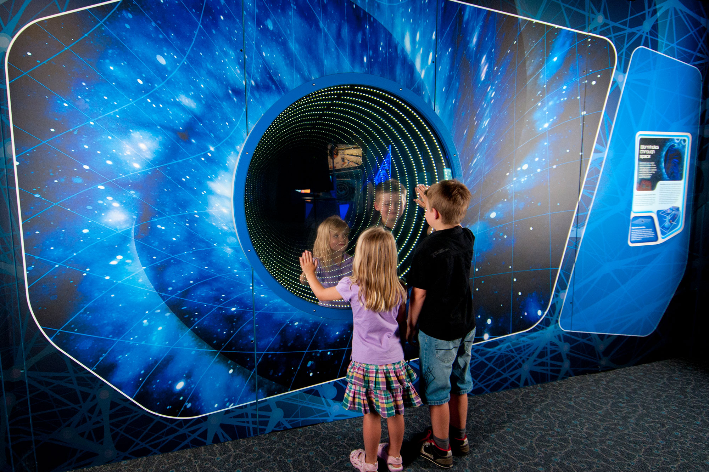

Family Activities in the Nyoongar Seasons
Of the six Nyoongar Calender seasons, three are the main focus for this app, due to their differences and alignment with the school holidays in Australia.
These are: Birak (Summer), Kambarang (Spring) and Makuru (Winter)
Pick a season to explore:
To keep a log of the activities you have done, click on the "My Activity" button in the top right hand corner, and create or log into an existing account.
To use the activity log, simply click on the dot point of the activity you want to log, and it will add it to your account's activity log.
Temperature and Rainfall Patterns in the Nyoongar Region
The Nyoongar region is the south-western region of Western Australia. This includes the Perth metropolitan area and surrounding regions. Therefore, activities chosen are mainly focused in the Perth area from Rockingham to Hillarys.
To understand which activities are suitable for each season, it is important to consider the weather patterns and natural occurrences of each time of year. This includes temperature and rainfall patterns:


For example, during the Birak season, temperatures are typically warm (Average high between 30-32°C) and rainfall is minimal (Average of less than 20mm for each month), making it ideal for outdoor activities like bush walks and picnics.
The Nyoongar Regions enclosed in our study area
These maps show the Whadjuk Nyoongar and Gnaala Karla Booja regions. These are the regions owned by the Indigenous people of Australia in which our activity areas are located (Hillarys to Rockingham).


Source: https://www.wa.gov.au/government/publications/maps-of-noongar-native-title-agreement-groups-the-settlement
My activity
Create an Account or Log In to keep your Activity Record.
Logged in as
Activities you've done:
The season of wildflowers. Kambarang is a time of renewal and growth, when the land is covered in colorful blooms. The days are becoming warmer and drier.
Average Maximum Temperature: 25.12°C
Average Precipitation: 32.16mm
Kambarang activities to do on a budget:
- Cycling around Perth: Matilda Bay, Kings Park, Coastal cycle paths, Lake Joondalup, Galup Reserve.
- Elizabeth Quay: Enjoy the waterfront, public art, events, cafes and restaurants.
- South Perth Foreshore: Perfect for a family picnic, walking the dog, or enjoying the views.
- Wanneroo Botanical Gardens: Enjoy walking through the beautiful gardens.
- Kings Park walks: Visit Poolgarla family area, Rio Tinto Naturescape, Fraser Ave Precinct for a picnic, walk through the trails in the Botanic Gardens, visit the May Driver Parkland with the dinosaur statues, and walk through the numerous trails in Kings Park.
- Bold Park trail walks: The 1.7km Camel Lake Heritage Trail, the 5.1km Zamia Trail (hilly) with great lookout spots, the 1.1km Tuart Walk, and other small trails that go through the park.
- Perry Lakes skate park: Perfect for all ages, skateboarding, biking, scootering, and is right next to Perry Lakes and Bold Park, perfect for walking.
- Bibra Lake reserve: Cycle, walk, scooter around the lake and enjoy the scenery.
Paid activities to do during Kambarang:
- Perth Zoo: Explore the diverse wildlife and exhibits, watch animal feedings and explore the gift shop at the end.
- Daytrip to Rottnest Island: Using any of the three ferry services to travel to the island, and then bike, walk or bus through the island to it's numerous beaches. Be on the lookout for Quokkas, the purple Rottnest Daisies, and grab a bite from the Rottnest Bakery, General Store, Pub and all other places on the island.
- Mini golf at Wembley Golf Course: Enjoy the mini golf course at Wembley, with a playground next door and a restaurant above to watch the kids play.
- Wanneroo Botanical Gardens: They offer both mini golf and "glow golf" for playing at night.
- Araluen Botanic Gardens:Walk through the trails and see the flowers.
Birak
December to January
The season of fire. Birak is a time of heat and dryness, where the Sea Breeze brings relief from the scorching sun. It's a time for outdoor activities and enjoying the natural beauty of the land.
Average Maximum Temperature: 30.53°C
Average Precipitation: 12.9mm



Source 1: https://thewest.com.au/news/weather/perth-weather-perth-set-to-swelter-in-warmer-than-average-spring-temperatures-as-summer-comes-early--c-16539960
Source 2: https://www.destinationperth.com.au/blog/post/perth-weather-through-the-year/
Source 3: https://www.destinationperth.com.au/listing/adventure-world/14/
Birak activities to do on a budget:
- Beaches: Cottesloe Beach, Omeo Wreck, Mettam's Pool, Hillarys Boat Harbour, and more for swimming, picnicing, and having fun with the family.
- Kings Park walks: Visit Poolgarla family area, Rio Tinto Naturescape, Fraser Ave Precinct for a picnic, walk through the trails in the Botanic Gardens, visit the May Driver Parkland with the dinosaur statues, and walk through the numerous trails in Kings Park.
- Go down to the Swan River: Go for a swim at any of the established swimming spots such as Matilda Bay, Point Walter and more.
- Fremantle Markets: Visit the oldest market in Australia, open Fridays, Saturdays and Sundays, eat food and go shopping.
- Local Swimming Pools: Have a look for local swimming pools in your area, such as Claremont Aquatic Centre, Bold Park Aquatic Centre, Fremantle Leisure Centre and more.
- Visit Fremantle: Walk the streets of Perth's oldest suburbs, visit cafes, stores, the ferris wheel and more.
Paid activities to do during Birak:
- Adventure World: Enjoy thrilling rides and attractions for the whole family.
- Daytrip to Rottnest Island: Using any of the three ferry services to travel to the island, and then bike, walk or bus through the island to it's numerous beaches. Be on the lookout for Quokkas, the purple Rottnest Daisies, and grab a bite from the Rottnest Bakery, General Store, Pub and all other places on the island.
- Outback Splash: Enjoy waterslides and other fun water activities, with areas for all ages to enjoy. Play mini golf, get lost in their maze, and enjoy food and drink on site.
- Perth Wildlife Encounters dolphin swim (Rockingham): Book a trip to swim with and watch dolphins play in the water.
- AQWA: Located in Hillarys Boat Harbour, this marine park offers interactive exhibits and educational programs, with a touch pool, underwater tunnel and more.
- Caversham Wildlife Park: Meet koalas, wombats, kangaroos, reptiles, farm animals and little penguins, and enjoy walking through the grounds.
Makuru
June to July
The cold and wet season. Makuru is a time of rain and cooler temperatures, where the land rejuvenates and the rivers flow. It is a time for indoor activities and enjoying the warmth of home.
Average Maximum Temperature: 19.0°C
Average Precipitation: 136.89mm


Source 1: https://www.abc.net.au/news/2025-09-04/rainfall-records-tumble-in-wa-winter-data-and-photo-wrap/105704596
Source 2: https://www.scitech.org.au/support/hire-an-exhibition/
Source 3: https://fremantleprison.com.au
Makuru activities to do on a budget:
- Visit the Perth Cultural Centre: Explore museums, galleries, and libraries.
- Scarborough Markets: Every Saturday evening are when the Scarborough Sunset Markets come alive in Makuru. Enjoy great food and shopping, and a wonderful view of the sea.
- Maritime Museum: Free for kids under 15, enjoy looking at the exhibits and learning about maritime history.
- Whale Watching - From the shore: Go to any beach and watch the waters for the whale migration.
- Fremantle Markets: Visit the oldest market in Australia, open Fridays, Saturdays and Sundays, eat food and go shopping.
- Walks in Perth Hills: Search up the best trails for you and your family, and enjoy the scenery.
- Scarborough Beach whale playground: Let the kids play with a view.
Paid activities to do during Makuru:
- Scitech: Discover science through interactive exhibits and demonstrations, let the kids play, and enjoy time out of the rain.
- WA Museum: Explore Perth's and Australia's history, and be on the lookout for special exhibitions.
- Bounce: Visit any of the bounce locations in Perth for some fun for the kids.
- Ice Skating: Visit one of the two ice rinks in Perth, hire skates, and have fun!
- Cinema: Have a look at what your local cinema is showing.
- Ten Pin Bowling: Take the family bowling and see who is the best!
- Fremantle Prison: Take a guided tour and learn about the history of this former prison.